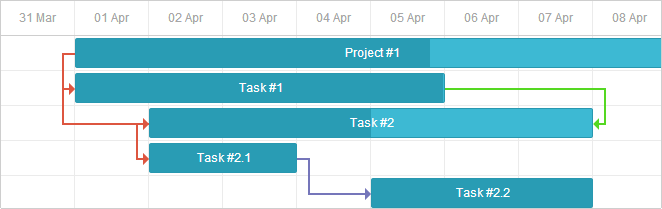
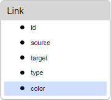

You can change the styling of links connecting tasks to get the desired look and feel of your gantt chart. Coloring dependency links in various colors allows you to visually differentiate them for users.

To set a custom style for links, you can use one of the following approaches:
First, let's have a look at the elements of the link structure, to get the logic of their positioning, sizing, functionality and default styling.
The DOM element of the link has the following structure:
The DOM looks as follows:
<div class="gantt_task_link" link_id="3">
<div class="gantt_line_wrapper">
<div class="gantt_link_line_left"></div>
</div>
<div class="gantt_line_wrapper">
<div class="gantt_link_line_left"></div>
</div>
<div class="gantt_line_wrapper">
<div class="gantt_link_line_down"></div>
</div>
<div class="gantt_line_wrapper">
<div class="gantt_link_line_right"></div>
</div>
<div class="gantt_link_arrow gantt_link_arrow_right"></div>
</div>
where:
.gantt_task_link:hover .gantt_line_wrapper div{
background-color:red;
}
You can apply classes from the link_class template to this element.
The styling of critical links is defined by adding the gantt_critical_link class to the gantt_task_link element.
The width of this element is defined by the link_wrapper_width configuration property.
gantt.config.link_wrapper_width = 30;
Now only the gantt_link_arrow_right and gantt_link_arrow_down are used.
The size of the gantt_link_arrow element is defined by the link_arrow_size configuration property.
gantt.config.link_arrow_size = 8;
The color of the link arrow is modified via CSS as the color of a border:
.gantt_link_arrow_right {
border-left-color: blue;
}
.gantt_link_arrow_left {
border-right-color: blue;
}
The width of this element can be changed via the link_line_width configuration property:
gantt.config.link_line_width = 3;
The color of the element is set via CSS like this:
.gantt_line_wrapper div{
background-color: #e63030;
}
To style dependency links, use the link_class template. For example, to color links depending on the tasks priority, use the code as in:
Coloring links depending on the dependency type
gantt.templates.link_class = function(link){
var types = gantt.config.links;
switch (link.type){
case types.finish_to_start:
return "finish_to_start";
break;
case types.start_to_start:
return "start_to_start";
break;
case types.finish_to_finish:
return "finish_to_finish";
break;
case types.start_to_finish:
return "start_to_finish";
break;
}
};
To style other elements of dependency links, use the templates listed in the Templates of Dependency Links article.
A similar approach can be applied to tasks. Read more about it here.
To specify a custom color for a dependency link, you can add extra property to the data object:

Note, this is a special property. By default, Gantt checks whether a link has it and if it does, applies the related value to the link. Otherwise, the predefined color is applied.
Setting the link's color in the data object
var tasks = {
data:[
{id:1, text:"Project #1", start_date:"01-04-2013", duration:18},
{id:2, text:"Task #1", start_date:"02-04-2013", duration:8, parent:1},
{id:3, text:"Task #2", start_date:"11-04-2013", duration:8, parent:1}
],
links:[
{id:1, source:1, target:2, type:"1", color:"red"}, {id:2, source:2, target:3, type:"0", color:"blue"}, {id:3, source:3, target:4, type:"0", color:"blue"}, {id:4, source:2, target:5, type:"2", color:"green"} ]
};
gantt.init("gantt_here");
gantt.parse(tasks);
gantt.getLink(4).color = "green";
If, at least one of the properties is assigned, the link receives additional class - "gantt_link_inline_color".
You can use this class to override some other style for the link:
.gantt_link_inline_color {
opacity:0.4
}
The properties can have any valid CSS color value, e.g. all of the following notations are valid:
link.color = "#FF0000";
link.color = "red";
link.color = "rgb(255,0,0)";
A similar approach can be applied to tasks. Read more about it here.
Back to top